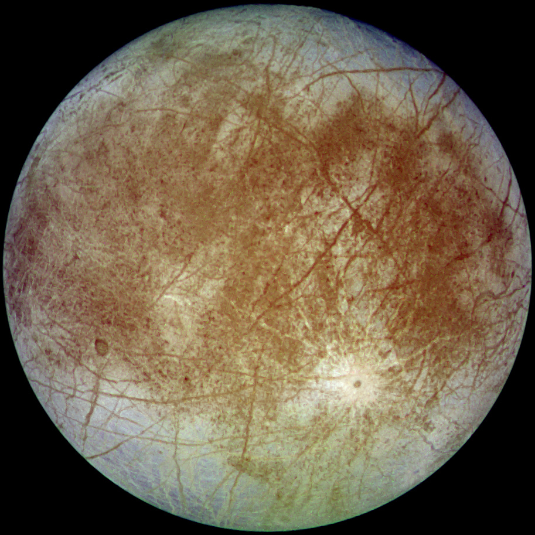

Callisto
View of the heavily cratered terrain of Callisto's anti-Jovian hemisphere obtained in 2001 by NASA's Galileo spacecraft. The large impact structure Asgard is on the limb at upper right. The prominent rayed crater below and just right of center is Bran.
- Diameter (km)
- 22.2 km
- Mass (kg)
- 2x1015km
- Orbital period
- 30.35 h

Europa
Europa's trailing hemisphere in approximate natural color. The prominent crater in the lower right is Pwyll and the darker regions are areas where Europa's primarily water ice surface has a higher mineral content. Imaged on 7 September 1996 by Galileo spacecraft.
- Diameter (km)
- 12.6 km
- Mass (kg)
- 10.8x1015 km
- Orbital period
- 7.66 h